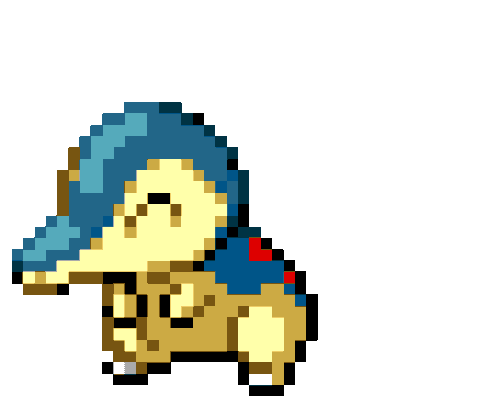

-
Bulbasaur #001

- Grama
- Veneno
Ha uma semente de planta em suas costas desde o dia que este pokemon nasce. A semente cresce lentamente.
-
Ivysaur #002

- Grama
- Veneno
Quando o bulbo em suas costas cresce, parece perder a capacidade de ficar de pé em suas patas traseiras.
-
Venusaur #003

- Grama
- Veneno
Sua planta floresce quando está absorvendo energia solar. Ele permanece em movimento para buscar a luz solar.
-
Charmander #004

- Fogo
Tem preferência por coisas quentes. Quando chove, diz-se que o vapor jorra da ponta de sua cauda.
-
Charmeleon #005

- Fogo
Tem uma natureza bárbara. Na batalha, ele chicoteia sua cauda ardente e corta com garras afiadas.
-
Charizard #006

- Fogo
Ele cospe fogo que é quente o suficiente para derreter pedregulhos. Pode causar incêndios florestais soprando chamas.
-
Squirtle #007

- Agua
Quando ele retrai seu longo pescoço em sua concha, ele esguicha água com força vigorosa.
-
Wartortle #008

- Agua
É reconhecido como um símbolo de longevidade. Se sua concha tem algas, esse Wartortle é muito antigo.
-
Blastoise #009

- Agua
Ele esmaga seu inimigo sob seu corpo pesado para causar desmaios. Em uma pitada, ele se retirará dentro de sua concha.
-
Caterpie #010

- Inseto
Para proteção, ele libera um fedor horrível da antena em sua cabeça para afastar os inimigos.
-
Pikachu #011
- Eletricidade
Os bolsos em suas bochechas, identificado por discos vermelhos que decoram, são capazes de gerar choques elétricos de intensidade variável, chegando até o nível de poder de um raio. Eles também o usam para se defender.
-
Raichu #012

- Eletricidade
Este é um roedor grande um Pokémon bípede. Sua pele é laranja, rabo grosso, escuro como fios de alta tensão que termina em um relâmpago e totalmente plano, também pode suportar cargas pesadas de eletricidade.
-
Ratata #013
- Normal
Rattata é cauteloso ao extremo. Mesmo enquanto ele está dormindo, ele escuta constantemente movendo suas orelhas ao redor. Não é exigente sobre onde ele vive - ele vai fazer seu ninho em qualquer lugar.
-
Eevee #014

- Normal
Tem uma composição genética instável que, de repente se transforma devido ao ambiente em que vive. Radiação de várias pedras faz com que esse Pokémon evolua.
-
Cyndaquil #015
- Fogo
Cyndaquil é pequeno, Pokémon bípede com pele azulada em cima de seu corpo, e uma cor leitosa na parte inferior. Embora chamado de fogo mouse Pokémon.
-
Snorlax #016

- Normal
Um dia típico de Snorlax consiste em nada mais do que comer e dormir. É um Pokémon tão dócil que há crianças que usam sua barriga expansiva como um lugar para brincar.